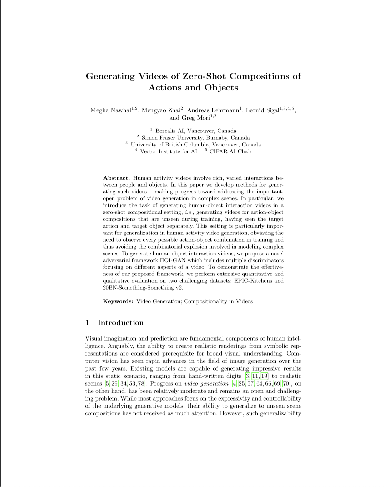

|
|
| Human activity videos involve rich, varied interactions between people and objects. In this paper we develop methods for generating such videos -- making progress toward addressing the important, open problem of video generation in complex scenes. In particular, we introduce the task of generating human-object interaction videos in a zero-shot compositional setting, \textit{i.e.}, generating videos for action-object compositions that are unseen during training, having seen the target action and target object separately. This setting is particularly important for generalization in human activity video generation, obviating the need to observe every possible action-object combination in training and thus avoiding the combinatorial explosion involved in modeling complex scenes. To generate human-object interaction videos, we propose a novel adversarial framework HOI-GAN which includes multiple discriminators focusing on different aspects of a video. To demonstrate the effectiveness of our proposed framework, we perform extensive quantitative and qualitative evaluation on two challenging datasets: EPIC-Kitchens and 20BN-Something-Something v2. |
|  |
M. Nawhal, M. Zhai, A. Lehrmann, L. Sigal, G. Mori Generating Videos of Zero-Shot Compositions of Actions and Objects In European Conference on Computer Vision (ECCV), 2020 (hosted on arXiv) |
| Template borrowed from Richard Zhang. |